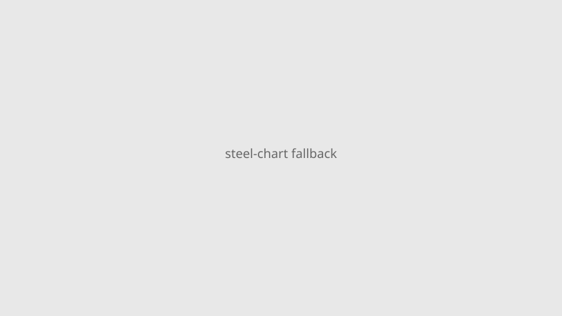

Iowa · Manufacturing · 28–29 September 2026
President Trump announces a planned $15 billion Mesabi Metallics steel plant in Iowa

What is agreed across desks
On 28 September 2026 President Trump held an Oval Office event with Mesabi Metallics executives and Iowa officials to announce a planned integrated steel mill. White House and company figures state approximately $15 billion for the mill, with an associated Minnesota iron-ore mine near $2.5 billion. First-phase capacity about 7.5 million tons per year, eventual target 10 million tons. Production targeted around 2030. Job estimates: up to 6,000 construction and about 1,750 permanent. Mesabi is owned by India’s Essar Group. Reuters, CNBC, and AP are consistent on the headline numbers.
What is only a quote or incomplete
Attribution of the investment to steel tariffs is an administration assessment. Export-Import Bank financing of up to $10 billion has been reported; the term sheet is not fully public. “Largest ever” claims rest on capacity targets not yet built.
Mechanism and history
Mesabi’s Minnesota mine is the first new iron-ore mine on the Mesabi Range in roughly half a century. Large green-field steel projects in the United States have been rare since the 1960s. The announcement occurs weeks before midterm elections in a state with competitive races.
What the story is not
Not a completed plant. Steel is not scheduled until 2030. Not purely domestic-owned. Not a verified ranking until capacity is measured.

Source articles and scores
| Outlet | Headline | T | N | C |
|---|---|---|---|---|
| Reuters | Trump unveils $15 billion planned Iowa steel project | 94 | 0 | 95 |
| CNBC | Trump announces plan for $15 billion steel plant | 92 | 0 | 92 |
| AP | Trump announces a new $15B Iowa steel plant | 93 | 0 | 98 |
Hero: Commons type aerial via Special:FilePath. Chart local SVG. No news CDN sole src. No crossorigin.